Senior Software Developer
Holisticon Connect Sp. z o. o., Wrocław, Poland
CV & personal website
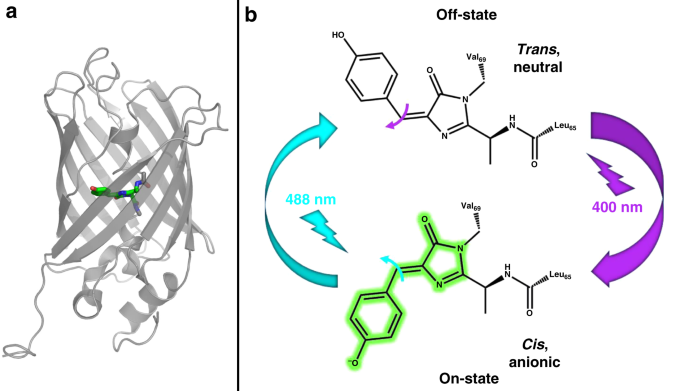
Photoswitching mechanism of a fluorescent protein revealed by time-resolved crystallography and transient absorption spectroscopy. Nat. Commun., 2020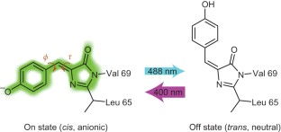
Chromophore twisting in the excited state of a photoswitchable fluorescent protein captured by time-resolved serial femtosecond crystallography. Nat. Chem., 2018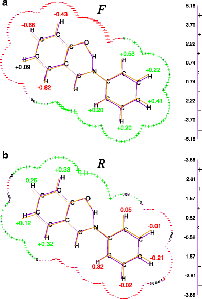
Predicting substituent effects on activation energy changes by static catalytic fields. J. Mol. Model., 2018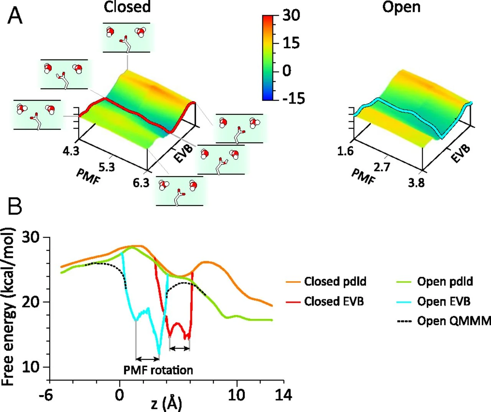
On the control of the proton current in the voltage-gated proton channel Hv1. PNAS, 2018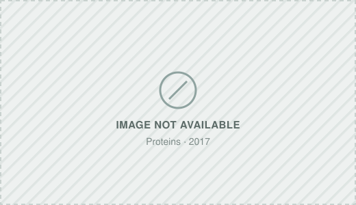
Norovirus RNA-dependent RNA polymerase: A computational study of metal-binding preferences. Proteins, 2017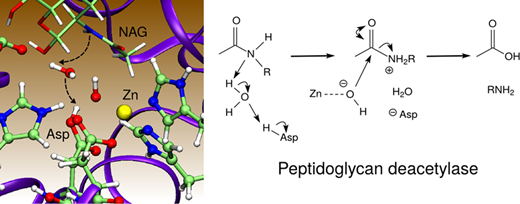
Catalytic mechanism of peptidoglycan deacetylase: A computational study. J. Phys. Chem. B, 2017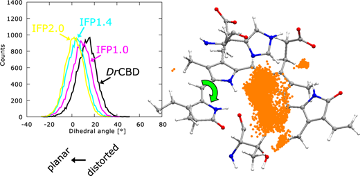
Structural determinants of improved fluorescence in a family of bacteriophytochrome-based infrared fluorescent proteins. Biochemistry, 2016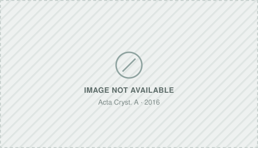
Time-Resolved Serial Femtosecond Crystallography On Photoswitchable Fluorescent Proteins. Acta Cryst. A, 2016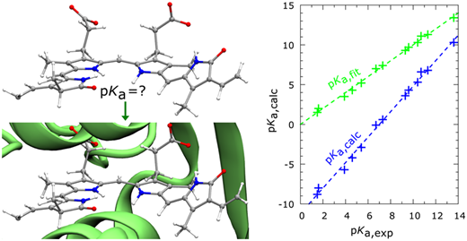
Pcetk: A pDynamo-based Toolkit for Protonation State Calculations in Proteins. J. Chem. Inf. Model., 2015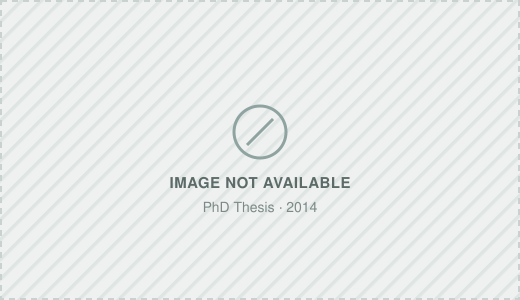
Computational Modeling of Catalytic Mechanisms of Glycyl Radical Enzymes. PhD thesis, 2014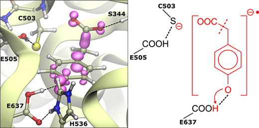
Catalytic mechanism of the glycyl radical enzyme 4-hydroxyphenylacetate decarboxylase from continuum electrostatic and QC/MM calculations. JACS, 2013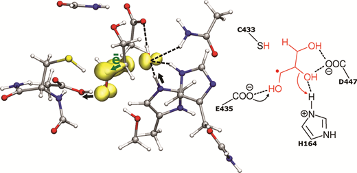
Glycerol Dehydratation by the B12-Independent Enzyme May Not Involve the Migration of a Hydroxyl Group. J. Phys. Chem. B, 2012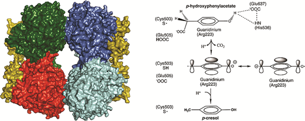
Structural basis for a Kolbe-type decarboxylation catalyzed by a glycyl radical enzyme. JACS, 2011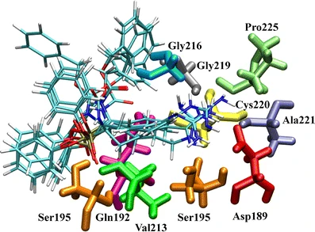
The molecular basis of urokinase inhibition: from nonempirical analysis of intermolecular interactions. J. Mol. Model., 2007